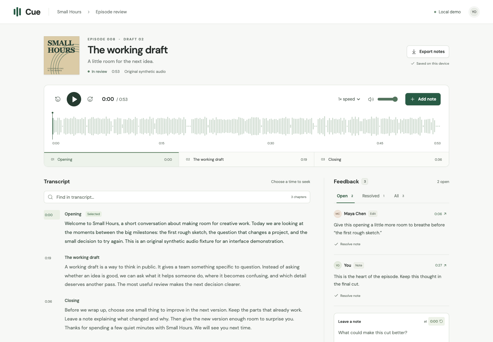
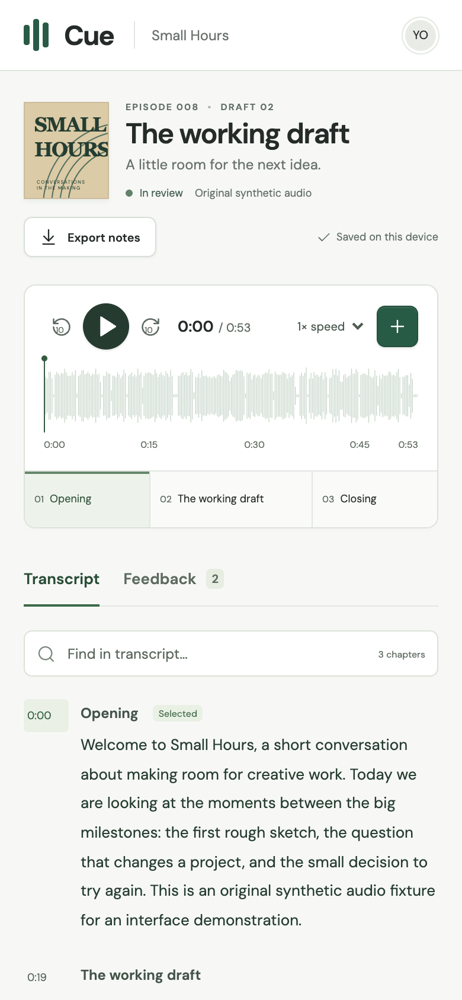

Desktop at 1440 CSS px / DPR1; phone at 390 CSS px / DPR2. Inspect at browser zoom100%. These contextual screenshots were captured separately in the idle state; the report retains its own original/restored crops. Only the play icon is under review, not the entire app.

